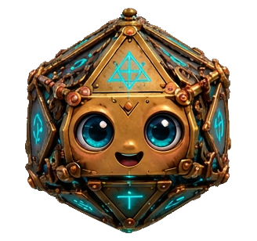
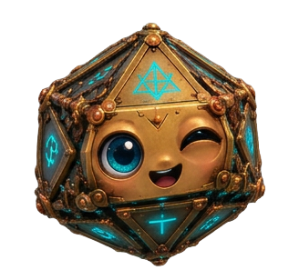
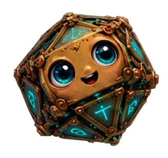
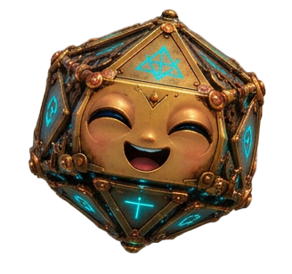
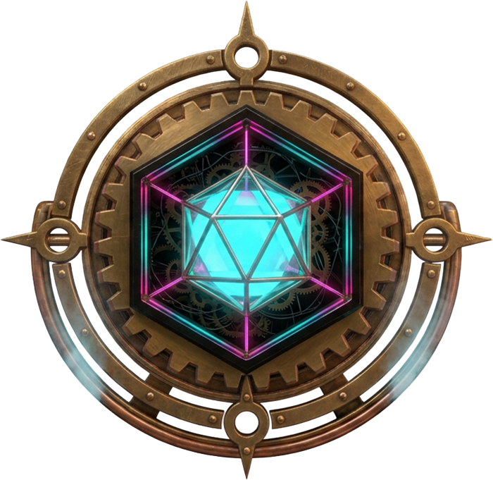
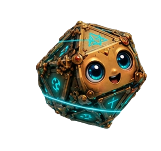
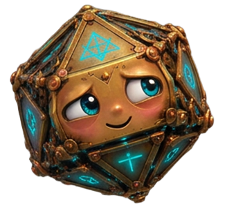
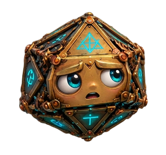

Configurar el Ojo
Pegad la clave de la API de Gemini. Se guarda solo en este iPad.
Pegad la clave de la API de Gemini. Se guarda solo en este iPad.




Registro del mapa de Vela



Escanea el código con tu móvil, déjanos tus datos y te enviamos tu carta del multiverso. ¡Es gratis!
Compártela y etiquétanos en @icosaria

No se guarda ninguna foto. Solo se guardan los datos de cada escaneo en este iPad.